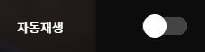

미디어 플레이어 접근성
콘텐츠연합플랫폼 ㈜
클라이언트개발부 지성봉
정보접근성 기술개발 연구팀
- 한정기
- 김데레사
- 야무
 김혜일
김혜일- 조은
- 지성봉
웹 접근성
장애에 구애없이 모든 사람이 접근할 수 있는 것
웹 미디어 플레이어 접근성
equal to 미디어 플레이어 기능
조작 가능
- 재생 / 정지
- 탐색
- 되감기/빨리감기
- 볼륨 조절
- 회차 목록 보기
- 설정 패널 등
시청 가능
- 화면을 볼 수 있어야
- 소리를 들을 수 있어야
웹 미디어 플레이어 접근성 실태
| 문제점 | A 사이트 | B 사이트 | C 사이트 | D 사이트 |
|---|---|---|---|---|
| 초점 이동 | 해당 | 해당 | 해당 | 해당 |
| 키보드 조작 | 해당 사항 없음 | 해당 | 해당 | 해당 사항 없음 |
| 자막 미제공 | 해당 | 해당 | 해당 | 해당 |
| 대체 텍스트 | 해당 | 해당 | 해당 사항 없음 | 해당 |
| 자동 재생 | 해당 | 해당 사항 없음 | 해당 | 해당 |
문제점 & 해결 방법
초점 이동 불가
6.1. 입력장치 접근성
6.1.2. (초점 이동) 키보드에 의한 초점은 논리적으로 이동해야하며 시각적으로 구별할 수 있어야 한다.
문제 사례
해결 방법
- 초점 이동을 시각적으로 확인 할 수 있게 제공
- 논리적 순서에 따라 초점이 이동되도록 제공
접근성 제공 사례
키보드 조작 불가
6.1. 입력장치 접근성
6.1.1. (키보드 사용 보장) 모든 기능은 키보드만으로도 사용할 수 있어야 한다.
문제 사례
해결 방법
- 키보드만으로도 조작할 수 있도록 제작
- 초점을 얻을 수 있는 요소 사용
- 혹은
tabindex속성을 이용하여 초점을 얻을 수 있도록 제작
접근성 제공 사례
자막 제공
5.2. 멀티미디어 대체 수단
5.2.1. (자막 제공) 멀티미디어 콘텐츠에는 자막, 대본 또는 수화를 제공해야 한다
문제 사례
해결 방법
- 열린 자막 혹은 닫힌 자막 제공
- 화면 해석, 대본 제공
- 수화 제공
- 사용자 제작 영상의 경우 자막/원고 업로드 기능 제공
접근성 제공 사례
대체 텍스트
5.1. 대체 텍스트
5.1.1. (적절한 대체 텍스트 제공) 텍스트 아닌 콘텐츠는 그 의미나 용도를 인식할 수 있도록 대체 텍스트를 제공해야 한다.
문제 사례
해결 방법
-
텍스트가 아닌 콘텐츠(이미지 같은)에 대해 동등한 수준의 대체 텍스트나 대체 콘텐츠를 제공
<img src="images/guide_popup.png"> <!-- 가이드 이미지 --> <div class="visible-hidden"> 단축키 안내 ... </div> -
버튼 등의 인터랙션 요소에 대한 대체텍스트는 사용자가 해당 버튼을 활성화 했을 때 어떠한 상황이 발생될지를 예측 가능하도록 제공
<button class="btn-toggle btn-list-open">회차 목록 열기</button>
자동 재생
5.3. 명료성
5.3.4. (자동 재생 금지) 자동으로 소리가 재생되지 않아야 한다.
문제 사례
해결 방법
- 정지 상태로 제공하며 사용자가 요구할 경우에만 재생할 수 있도록 제어 기능 제공
- 자동으로 재생되는 소리는 3 초 내에 멈추거나, 지정된 키(예 : esc 키)를 누르면 재생을 멈추도록 구현
접근성 제공 사례
접근 가능한 미디어 플레이어 만들기
- 처음부터 접근성을 구축
- 플레이어에 접근 가능한지 확인
- 자동 재생 금지
- 깜박이는 콘텐츠 지양
- 원고 / 자막 / 수화 제공
- 오디오 설명 제공
- 최소한의 접근성 지침을 준수하려는 노력
- 접근성의 향상을 위해 WAI-ARIA 사용하는 등 사용자 경험을 향상시킬 수 있도록 노력
- plug-in 보다는 HTML 자체 기술 사용 지향
접근 가능한 미디어 플레이어 만들기
- 처음부터 접근성을 구축
- 플레이어에 접근 가능한지 확인
- 자동 재생 금지
- 깜박이는 콘텐츠 지양
- 원고 / 자막 / 수화 제공
- 오디오 설명 제공
- 키보드 만으로도 플레이어 활성화 가능
- 볼륨 조절, 재생, 정지 등 컨트롤 가능
접근 가능한 미디어 플레이어 만들기
- 처음부터 접근성을 구축
- 플레이어에 접근 가능한지 확인
- 자동 재생 금지
- 깜박이는 콘텐츠 지양
- 원고 / 자막 / 수화 제공
- 오디오 설명 제공
- 자동으로 재생 되지 않도록 제공
- 자동 재생이 필요한 경우, 재생을 일시 중지하거나 중지 할 수 있는 메커니즘 제공
-
자동 재생 여부를 사용자가 결정할 수 있도록 제공

접근 가능한 미디어 플레이어 만들기
- 처음부터 접근성을 구축
- 플레이어에 접근 가능한지 확인
- 자동 재생 금지
- 깜박이는 콘텐츠 지양
- 원고 / 자막 / 수화 제공
- 오디오 설명 제공
- 깜박거리는 콘텐츠는 광과민성경련 장애가 있는 사람에게 발작을 유도
- 포켓몬을 시청하던 12,000명의 사람들이 감광성 발작. 600명 이상의 어린이가 병원 입원 사례
접근 가능한 미디어 플레이어 만들기
- 처음부터 접근성을 구축
- 플레이어에 접근 가능한지 확인
- 자동 재생 금지
- 깜박이는 콘텐츠 지양
- 원고 / 자막 / 수화 제공
- 오디오 설명 제공
- 열린 자막 / 닫힌 자막 / 원고 제공
- 수화 제공
접근 가능한 미디어 플레이어 만들기
- 처음부터 접근성을 구축
- 플레이어에 접근 가능한지 확인
- 자동 재생 금지
- 깜박이는 콘텐츠 지양
- 원고 / 자막 / 수화 제공
- 오디오 설명 제공
- 모든 시각 정보를 포함한 음성 오디오 트랙 제공
- ex) 화면 해설 방송
감사합니다
publisher@publisher.name